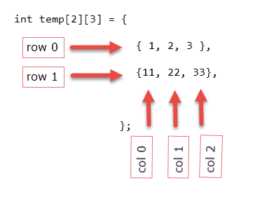

Two Dimensional Array in C
Last updated on July 27, 2020
Two-dimensional Array #
The syntax declaration of 2-D array is not much different from 1-D array. In 2-D array, to declare and access elements of a 2-D array we use 2 subscripts instead of 1.
Syntax: datatype array_name[ROW][COL];
The total number of elements in a 2-D array is ROW*COL. Let’s take an example.
int arr[2][3];
This array can store 2*3=6 elements. You can visualize this 2-D array as a matrix of 2 rows and 3 columns.
The individual elements of the above array can be accessed by using two subscript instead of one. The first subscript denotes row number and second denotes column number. As we can see in the above image both rows and columns are indexed from 0. So the first element of this array is at arr[0][0] and the last element is at arr[1][2]. Here are how you can access all the other elements:
arr[0][0] - refers to the first element
arr[0][1] - refers to the second element
arr[0][2] - refers to the third element
arr[1][0] - refers to the fourth element
arr[1][1] - refers to the fifth element
arr[1][2] - refers to the sixth element
If you try to access an element beyond valid ROW and COL , C compiler will not display any kind of error message, instead, a garbage value will be printed. It is the responsibility of the programmer to handle the bounds.
arr[1][3] - a garbage value will be printed, because the last valid index of COL is 2
arr[2][3] - a garbage value will be printed, because the last valid index of ROW and COL is 1 and 2 respectively
Just like 1-D arrays, we can only also use constants and symbolic constants to specify the size of a 2-D array.
1 2 3 4 5 6 | #define ROW 2
#define COL 3
int i = 4, j = 6;
int arr[ROW][COL]; // OK
int new_arr[i][j]; // ERROR
|
Processing elements of a 2-D array #
To process elements of a 2-D array, we use two nested loop. The outer for loop to loop through all the rows and inner for loop to loop through all the columns. The following program will clear everything.
1 2 3 4 5 6 7 8 9 10 11 12 13 14 15 16 17 18 19 20 21 22 23 24 25 26 27 28 29 30 | #include<stdio.h>
#define ROW 3
#define COL 4
int main()
{
int arr[ROW][COL], i, j;
for(i = 0; i < ROW; i++)
{
for(j = 0; j < COL; j++)
{
printf("Enter arr[%d][%d]: ", i, j);
scanf("%d", &arr[i][j]);
}
}
printf("\nEntered 2-D array is: \n\n");
for(i = 0; i < ROW; i++)
{
for(j = 0; j < COL; j++)
{
printf("%3d ", arr[i][j] );
}
printf("\n");
}
// signal to operating system everything works fine
return 0;
}
|
Expected Output:
1 2 3 4 5 6 7 8 9 10 11 12 13 14 15 16 17 18 | Enter arr[0][0]: 11
Enter arr[0][1]: 35
Enter arr[0][2]: 73
Enter arr[0][3]: 831
Enter arr[1][0]: 3
Enter arr[1][1]: 40
Enter arr[1][2]: 31
Enter arr[1][3]: 93
Enter arr[2][0]: 35
Enter arr[2][1]: 10
Enter arr[2][2]: 52
Enter arr[2][3]: 81
Entered 2-D array is:
11 35 73 831
3 40 31 93
35 10 52 81
|
How it works:
There is nothing new in this previous program that deserves any explanation. We are just using two nested for loops. The first nested for loop takes input from the user. And the second for loop prints the elements of a 2-D array like a matrix.
Initializing 2-D array #
Initialization of 2-D array is similar to a 1-D array. For e.g:
1 2 3 4 | int temp[2][3] = {
{ 1, 2, 3 }, // row 0
{11, 22, 33} // row 1
};
|

After this initialization, each element is as follows:
1 2 3 4 5 6 | temp[0][0] : 1
temp[0][1] : 2
temp[0][2] : 3
temp[1][0] : 11
temp[1][1] : 22
temp[1][2] : 33
|
Consider another initialization.
1 2 3 4 5 6 | int my_arr[4][3] = {
{10},
{77, 92},
{33, 89, 44},
{12, 11}
};
|
The size of my_arr is 4*3=12 , but in the initialization, we have only specified the value of 8 elements. In such cases, the remaining elements will be given the value of 0.
The individual elements are as follows:
1 2 3 4 5 6 7 8 9 10 11 12 13 14 15 | my_arr[0][0] : 10
my_arr[0][1] : 0
my_arr[0][2] : 0
my_arr[1][0] : 77
my_arr[1][1] : 92
my_arr[1][2] : 0
my_arr[2][0] : 33
my_arr[2][1] : 89
my_arr[2][2] : 44
my_arr[3][0] : 12
my_arr[3][1] : 11
my_arr[4][2] : 0
|
In 2-D arrays, it is optional to specify the first dimension but the second dimension must always be present. This works only when you are declaring and initializing the array at the same time. For example:
1 2 3 4 | int two_d[][3] = {
{13,23,34},
{15,27,35}
};
|
is same as
1 2 3 4 | int two_d[2][3] = {
{13, 23, 34},
{15, 27, 35}
};
|
As discussed earlier you can visualize a 2-D array as a matrix. The following program demonstrates the addition of two matrices.
1 2 3 4 5 6 7 8 9 10 11 12 13 14 15 16 17 18 19 20 21 22 23 24 25 26 27 28 29 30 31 32 33 34 35 36 37 38 39 40 41 42 43 44 45 46 47 48 49 50 51 52 53 54 55 56 57 | #include<stdio.h>
#define ROW 2
#define COL 3
int main()
{
int mat1[ROW][COL], mat2[ROW][COL], mat3[ROW][COL];
int i, j;
printf("Enter first matrix: \n\n");
for(i = 0; i < ROW; i++)
{
for(j = 0; j < COL; j++)
{
printf("Enter a[%d][%d]: ", i, j);
scanf("%d", &mat1[i][j]);
}
}
printf("\nEnter Second matrix: \n\n");
for(i = 0; i < ROW; i++)
{
for(j = 0; j < COL; j++)
{
printf("Enter a[%d][%d]: ", i, j);
scanf("%d", &mat2[i][j]);
}
}
// add mat1 and mat2
for(i = 0; i < ROW; i++)
{
for(j = 0; j < COL; j++)
{
mat3[i][j] = mat1[i][j] + mat2[i][j] ;
}
}
printf("\nResultant array: \n\n");
// print resultant array
for(i = 0; i < ROW; i++)
{
for(j = 0; j < COL; j++)
{
printf("%5d ", mat3[i][j]);
}
printf("\n");
}
// signal to operating system program ran fine
return 0;
}
|
Expected Output:
1 2 3 4 5 6 7 8 9 10 11 12 13 14 15 16 17 18 19 20 21 22 23 24 | Enter first matrix:
Enter a[0][0]: 12
Enter a[0][1]: 32
Enter a[0][2]: 13
Enter a[1][0]: 35
Enter a[1][1]: 54
Enter a[1][2]: 35
Enter Second matrix:
Enter a[0][0]: 57
Enter a[0][1]: 64
Enter a[0][2]: 58
Enter a[1][0]: 72
Enter a[1][1]: 84
Enter a[1][2]: 29
Resultant array:
mat1 + mat2 =
69 96 71
107 138 64
|
How it works:
Two matrices can be added or subtracted, only if they have the same dimension. In other words, a matrix of size 2*3 can be added to another matrix of 2*3, but you can’t add or subtract it to a matrix of 2*4 or 3*2. The resultant array will be a matrix of the same dimension as the original two. First two for loops asks the user to enter two matrices. The third for loop adds corresponding elements of mat1 and mat2 in a new array mat3. Fourth for loop prints the elements of array mat3.
Arrays of more than two dimension #
You can even create an array of 3 or more dimensions or more, but generally, you will never need to do so. Therefore, we will restrict ourself to 3-D arrays only.
Here is how you can declare an array of 3 dimensions.
int arr[2][3][2];
3-D array uses three indexes or subscript. This array can store 2*3*2=12 elements.
Here is how to initialize a 3-D array.
1 2 3 4 5 6 7 8 9 10 11 12 13 | int three_d[2][3][4] = {
{
{12,34,56,12},
{57,44,62,14},
{64,36,91,16},
},
{
{87,11,42,82},
{93,44,12,99},
{96,34,33,26},
}
};
|
You can think of this array as 2 2-D arrays and each of these 2-D array has 3 rows and 4 columns;
Here are individual elements of the array:
First Row
1 2 3 4 5 6 7 8 9 10 11 12 13 14 15 | three_d[0][0][0] : 12
three_d[0][0][1] : 34
three_d[0][0][2] : 56
three_d[0][0][3] : 12
three_d[0][1][0] : 57
three_d[0][1][1] : 44
three_d[0][1][2] : 62
three_d[0][1][3] : 14
three_d[0][2][0] : 64
three_d[0][2][1] : 36
three_d[0][2][2] : 91
three_d[0][2][3] : 16
|
Second Row
1 2 3 4 5 6 7 8 9 10 11 12 13 14 15 | three_d[1][0][0] : 87
three_d[1][0][1] : 11
three_d[1][0][2] : 42
three_d[1][0][3] : 82
three_d[1][1][0] : 93
three_d[1][1][1] : 44
three_d[1][1][2] : 12
three_d[1][1][3] : 99
three_d[1][2][0] : 96
three_d[1][2][1] : 34
three_d[1][2][2] : 33
three_d[1][2][3] : 26
|
Passing Multidimensional Arrays to Functions #
You can pass multi-dimensional arrays to functions just like a 1-D array, but you need to specify the size of the all other dimensions except the first one. For e.g:
If you need to pass arr[2][3] to a function called func_1(), then you need to declare the func_1() like this:
1 2 3 4 | void func_1(int my_arr[2][3]) // OK
{
//...
}
|
or like this:
1 2 3 4 | void func_1(int my_arr[][3]) // OK
{
//...
}
|
It would be invalid to declare formal argument as follows:
1 2 3 4 | void func_1(int my_arr[][]) // error
{
//...
}
|
Similarly to pass a 3-D array you need to declare the function as follows:
1 2 3 4 5 6 | int arr[2][3][4];
void func_1(int my_arr[][3][4])
{
//...
}
|
Load Comments